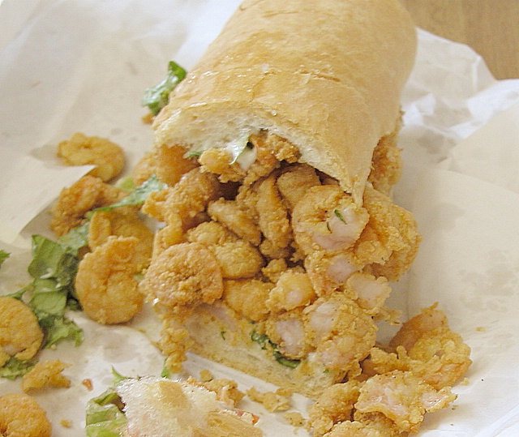

A po' boy (also po-boy, po boy derived from the non-rhotic southern accents often heard in the region, or poor boy) is a sandwich originally from Louisiana.
It traditionally consists of a filling, which is usually roast beef, ham, or fried seafood such as shrimp, crawfish, fish, oysters, or crab on a New Orleans French bread roll cut lengthwise. This "po' boy bread" is known for its crisp crust and fluffy crumb.
Each year there is a festival in New Orleans dedicated to the po' boy, the Oak Street Po'Boy Festival.
It is a one-day festival that features live music, arts, and food vendors with multiple types of po' boys. It is held in mid-November along a commercial strip of Oak Street in the city's Carrollton neighborhood. The festival gives "best-of" awards, which gives the chefs an incentive to invent some of the most creative po' boys.
This is a learning project and by no means an actual working site
Info and recipes sourced from: